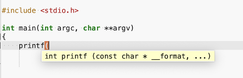

Símbolos y etiquetas¶
Al abrir un archivo, Geany determina su tipo en base al sufijo que lleve el nombre. Por ejemplo, los programas en lenguaje C son detectados porque llevan la extensión .c
Si se trata de un fichero cuyo tipo está contemplado por el editor, se analizará su contenido para extraer la información de símbolos, que luego se muestran en el panel lateral, en la pestaña Símbolos.
La información sobre símbolos también se usa para el autocompletado y para mostrar información emergente:

Otra utilidad de los símbolos son los comandos Buscar > Ir a la definición/declaración del símbolo. Estos comandos se pueden usar con todos los símbolos de los documentos abiertos.
Pero esto plantea un problema. ¿Que pasa si queremos ayuda sobre una función de biblioteca?. Por ejemplo, en un programa Python:
print("Hola")
... la palabra print no es un símbolo que hayamos definido en nuestro programa, sino que forma parte de la biblioteca Python. Necesitaríamos que Geany abra el texto fuente de esa biblioteca, analice las funciones estándar, como print() y prepare información sobre esos símbolos.
La solución es poner dicha información en un archivo especial que contenga definiciones de símbolos (también conocido como "archivos de etiquetas globales"). Estos archivos se pueden configurar para que se carguen manualmente, o de forma automática, al iniciar Geany.
Archivos de etiquetas globales¶
Los archivos de etiquetas globales se utilizan para proporcionar símbolos para el autocompletado y consejos de llamada sin tener que abrir los archivos fuente que contienen estos símbolos. Podemos abrir un archivo de etiquetas globales personalizado de dos maneras:
- Usando el comando Cargar archivo de etiquetas en el menú Herramientas.
- Moviendo (o creando un enlace) nuestros archivos de etiquetas al subdirectorio donde se guardan los archivos de configuración de Geany.
Podemos descargar estos archivos o generar los nuestros propios. Se identifican porque su nombre sigue el formato:
nombre.lenguaje.tags
...siendo "lenguaje" una de las extensiones establecidas. Algunos archivos de etiquetas globales se distribuyen con Geany y se cargarán automáticamente cuando se utilice por primera vez el tipo de archivo correspondiente.
¿Como localizar estos archivos? Vamos a averiguarlo. Comenzamos por pulsar en el menú Ayuda > Mensajes de depuración. Al comienzo de la lista de mensajes tenemos algo así como:
Geany INFO : Geany 2.0
Geany INFO : GTK 3.24.49, GLib 2.84.1
Geany INFO : OS: Ubuntu 25.04
Geany INFO : System data dir: /usr/share/geany
Geany INFO : User config dir: /home/usuario/.config
Con esto, ya sabemos donde se encuentran los directorios con ficheros de configuración de Geany. Seguidamente acudimos a un terminal de comandos del sistema operativo (o a la emulación VTE de Geany) y ejecutamos un comando para buscar ficheros con extensión .tags:
$ ls /usr/share/geany/tags/*.tags -1
/usr/share/geany/tags/entities.html.tags
/usr/share/geany/tags/std99.c.tags
/usr/share/geany/tags/std.pas.tags
/usr/share/geany/tags/std.php.tags
/usr/share/geany/tags/std.py.tags
Vemos que tenemos archivos de etiquetas para los lenguajes:
- HTML
- C99
- Pascal
- PHP
- Python
Si abrimos alguno de esos ficheros (por ejemplo, el de Python, std.py.tags) veremos que contiene cientos (e incluso miles) de definiciones de funciones y otros símbolos. Supongamos que buscamos la definición de la función print():
print /unknown 1;" kind:function signature:(*args, sep=' ', end='\n', file=None, flush=False)
Cada línea es la definición de un símbolo. ¿Como es la sintaxis de esos archivos? Geany utiliza un planteamiento similar a ctags, una herramienta de programación originaria del sistema operativo Unix, que genera un archivo de índice con los nombres que se encuentran en el texto de los programas.
Dependiendo del lenguaje de programación, podemos crear un índice de nombres de funciones, variables, miembros de la clase, macros, etc. Estas etiquetas facilitan la navegación cuando usamos un editor de texto.
Formato de archivo de etiquetas globales¶
Geany tiene su propio formato de archivo de etiquetas, similar al que usa ctags (pero incompatible con este). En realidad, puede usar tres formatos diferentes:
- Formato del tipo CTags
- Formato separado por caracteres '|' (pipes)
- Formato de administrador de etiquetas (tagmanager)
Creando nuestros propios archivos de etiquetas¶
El manual de Geany tiene un apartado que describe la creación de archivos de etiquetas.
Sin entrar en detalles, podemos generar nuestros propios archivos de etiquetas analizando una lista de archivos fuente. Podemos utilizar un comando ctags o incluso con el propio geany. El comando en este caso es:
geany -g -P Archivo_de_etiquetas Lista_de_archivos
-
Archivo_de_etiquetases el nombre del fichero a crear, y debe estar en el formato descrito anteriormente,nombre.lenguaje.tags -
La lista de archivos es una lista de nombres de archivo fuente, cada uno de ellos con su ruta completa (a menos que esté generando archivos de etiquetas C/C++ y haya establecido la variable de entorno CFLAGS).
Si tenemos varios archivos fuente en lenguaje C/C++, podemos crear uno maestro con sentencias #include y mencionarlo en el comando. Se hará un preproceso para incluir los textos de los archivos incluidos. La opción -P, o en su lugar --no-preprocessing, es opcional, y deshabilita el preproceso de directivas #include. Podemos utilizar esta opción si deseamos especificar cada archivo fuente en la línea de comandos en lugar de usar un archivo maestro de cabeceras. También puede ser útil si no se desea especificar la variable de entorno CFLAGS.
Como ejemplo, supongamos la biblioteca "wxD" para el lenguaje de programación D:
$ geany -g wxd.d.tags /home/username/wxd/wx/*.d
O por ejemplo, en Windows:
> c:\archivos de programa\geany\bin\geany -g c:\misetiquetas.php.tags c:\programa.php
Archivo ignore.tags¶
Podemos ignorar ciertos símbolos para los lenguajes basados en C si conducen a un análisis incorrecto del código. Pulsar en el menú Herramientas > Archivos de configuración > ignore.tags para abrir el archivo ignore.tags del usuario.
En este archivo, podemos enumerar todos los nombres de símbolos que deseamos ignorar, separados por espacios y/o saltos de línea.
Ejemplo:
G_GNUC_NULL_TERMINATED
G_GNUC_PRINTF
G_GNUC_WARN_UNUSED_RESULT
BAR
Esto ignorará las macros indicadas y detectará correctamente 'Foo' como un tipo en lugar de 'BAR' en una sentencia como la siguiente:
struct Foo BAR { int i; };